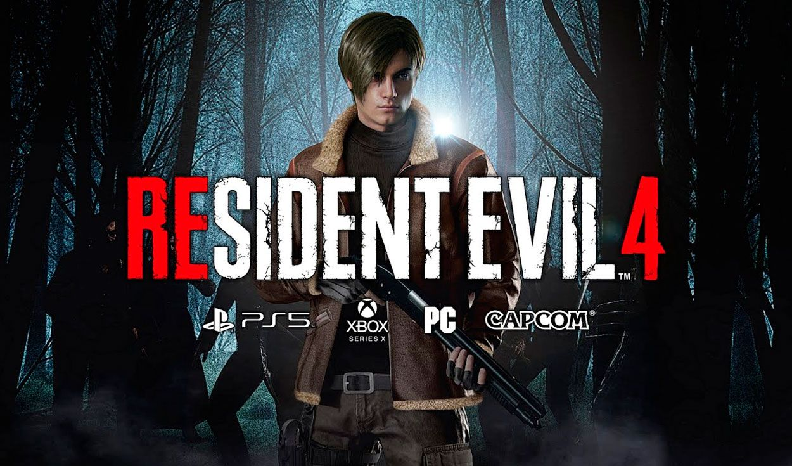
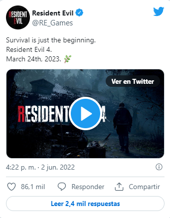

Resident Evil 4 Remake reimaginara la historia original.
Capcom quiere satisfacer a los fans y dar un toque moderno al clasico del Survival Horror
Aunque por mucho tiempo fue rumorado, hoy por fin se hizo oficial la existencia de Resident Evil 4 Remake con una espectacular presentacion en el State of Play de Summer Game Fest 2022. Luego de que ver el primer avance, Capcom compartio más informacion sobre el proyecto que debutara en primavera de 2023.
RESIDENT EVIL 4 REMAKE REIMAGINARA LA HISTORIA DEL JUEGO ORIGINAL.
Tras la presentacion del primer trailer de Resident Evil 4 Remake, Capcom subio una publicacion al Blog Oficial de PlayStation. En ella, Edvin Edso, productor promocional de la compañia japonesa, revelo algunos detalles interesantes del nuevo remake. De inicio, se confirmo que Resident Evil 4 Remake sera una reimaginacion de la version original que debuto en Nintendo GameCube en 2005, esto para expandir distintos elementos de su historia, asi como eventos y lugares, ampliando de gran manera la propuesta original.
RESIDENT EVIL 4 REMAKE MANTENDRA LA ESENCIA Y DARA UN TOQUE MODERNO.
Siguiendo la tendencia de los remakes actuales de la franquicia, Capcom apostara por un juego que reuna la esencia de la version original y los estandares actuales que den un toque moderno y fresco: "el juego se esta desarrollando para lograr una calidad de vanguardia para un survival horror adecuado para 2023, al tiempo que conserva la esencia del juego original. Nuestro objetivo es hacer que el juego se sienta familiar para los fanaticos de la serie, al tiempo que le brindamos una sensacion fresca. Esto se esta haciendo reimaginando la historia del juego manteniendo la esencia de su direccion, modernizando los graficos y actualizando los controles a un estandar moderno". Finalmente, Capcom compartio el inicio de la historia de Resident Evil 4 Remake y al menos, esta iniciara de la misma forma: "Han pasado seis años desde el desastre biologico en Raccoon City. Leon S. Kennedy, uno de los sobrevivientes del incidente, ha sido reclutado como un agente que reporta directamente al presidente. Con la experiencia de multiples misiones a sus espaldas, Leon es enviado a rescatar a la hija secuestrada del presidente de los Estados Unidos. El la rastrea hasta un pueblo europeo aislado, donde hay algo terriblemente mal con los aldeanos. Y se levanta el telon de esta historia de agotador survival horror y rescate." Resident Evil 4 Remake debutara el 24 de marzo de 2023 en PS5, Xbox Series X|S y PC. Sigue aqui, en LEVEL UP.